공조냉동기계기사(구) (2006-08-06 기출문제)
1과목: 기계열역학
1. 그림과 같은 증기압축 냉동사이클이 있다. 1, 2, 3 상태의 엔탈피가 다음과 같을 때 냉매의 단위 질량당 소용 동력과 냉각량은 얼마인가?(단, h1 = 178.16, h2 = 210.38, h3 = 74.53 , 단위 : kJ/kg)
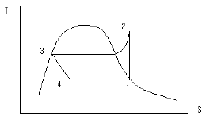
- 32.22 kJ/kg , 103.63 kJ/kg
- 33.22 kJ/kg , 136.85 kJ/kg
- 103.63 kJ/kg , 33.22 kJ/kg
- 136.85 kJ/kg , 33.22 kJ/kg
(정답률: 36%)

2. 온도가 127℃, 압력이 0.5MPa , 비체적 0.4m3/kg 인 이상기체가 같은 압력하에서 비체적이 0.3m3/kg으로 되었다면 온도는 약 몇 ℃ 인가?
- 95.25℃
- 27℃
- 100℃
- 20℃
(정답률: 53%)
3. 시속 30km로 주행하는 질량 3060kg의 자동차가 브레이크를 밝고서 8.8m 에서 정지하였다. 이때 베어링 마찰 등을 무시하고 브레이크 만으로 정지 하였다고 하면, 브레이크 장치에서 발생한 열량은 약 몇 kJ인가?(오류 신고가 접수된 문제입니다. 반드시 정답과 해설을 확인하시기 바랍니다.)
- 106
- 0.69
- 256
- 0.82
(정답률: 12%)
4. Rankine Cycle 로 작동하는 증기원동소의 각 점에서의 엔탈피가 다음과 같을 때 열효율은? (단, 보일러 입구 : 303kJ/kg, 보일러 출구 : 3553kJ/kg , 터빈출구 : 2682kJ/kg, 복수기(응축기)출구 : 300kJ/kg 이다.)
- 26.7%
- 30.8%
- 32.5%
- 33.6%
(정답률: 52%)
5. 임계점 및 삼중점에 대한 설명 중 맞는 것은?
- 헬륨이 상온에서 기체로 존재하는 이유는 임계온도가 상온보다 훨씬 높기 때문이다.
- 초임계 압력에서는 두 개의 상이 존재한다.
- 물의 삼중점 온도는 임계 온도보다 높다.
- 임계점에서는 포화액체와 포화증기의 상태가 동일하다.
(정답률: 43%)
6. 열역학 과정을 비가역으로 만드는 인자가 아닌 것은?
- 마찰
- 열의 일당량
- 유한한 온도 차에 의한 열전달
- 두 개의 서로 다른 물질의 혼합
(정답률: 50%)
7. 이상기체에서 내부에너지에대한 설명으로 옳은 것은?
- 압력만의 함수이다.
- 체적만의 함수이다.
- 온도만의 함수이다.
- 엔트로피만의 함수이다.
(정답률: 60%)
8. 300K 에서 400K 까지의 온도 구간에서 공기의 평균 정적 비열은 0.721kJ/kgK 이다. 이 온도 범위에서 공기의 내부에너지 변화량은?
- 0.721kJ/kg
- 7.21kJ/kg
- 72.1kJ/kg
- 721kJ/kg
(정답률: 58%)
9. 이상 오토사이클의 열효율이 56.5% 이라면 압축비는 약 얼마인가? (단, 작동 유체의 비열비는 1.4로 일정하다.)
- 7.5
- 8.0
- 9.0
- 9.5
(정답률: 72%)
10. 공기압축기의 입구 공기의 온도와 압력은 각각 27℃, 100kPa 이고 , 체적유량은 0.01 m3/s이다. 출구에서 압력이 400kPa 이고, 이 압축기의 단열효율이 0.8 일 때, 압축기의 소요동력은 약 얼마인가? ( 단, 공기의 정압비열과 기체상수는 각각 1kJ/kgK, 0.287kJ/kgK 이고 , 비열비 K는 1.4이다 .)
- 1.4kW
- 1.7kW
- 2.1kW
- 4.0kW
(정답률: 28%)
11. 다음 설명 중 틀린 것은?
- 마찰은 대표적인 비가역 현상이다.
- 자동차 엔진이 가역적으로 작동 될 때 출력이 가장 크다.
- 엔진이 가역적으로 작동되면 열효율이 100%가 된다.
- 80℃의 구리가 20℃의 물속에서 온도가 내려가는 현상은 비가역 현상이다.
(정답률: 43%)
12. 공기 2kg이 300K, 600kPa 상태에서 500K, 400kPa 상태로 가열된다. 이 과정 동안의 엔트로피 변화량은 약 얼마인가? (단, 공기의 정적비열과 정압비열은 각각 0.717kJ/kgK 과 1.004kJ/kgK 로 일정하다.)
- 0.73kJ/k
- 1.83kJ/k
- 1.02kJ/k
- 1.26kJ/k
(정답률: 37%)
13. 두께 1cm , 면적 0.5m2 의 석고판의 뒤에 가열 판이 부착되어 1000W 의 열을 전달한다. 가열 판의 뒤는 완전히 단열 되어 있고, 석고판 앞면의 온도는 100℃이다. 석고의 열전도률이 k = 0.79 W/mK 일 때 가열 판에 접하는 석고 면의 온도는?
- 110.2℃
- 125.3℃
- 150.8℃
- 212.7℃
(정답률: 57%)
14. 완전 단열된 축전기를 전압 12V, 전류 3A로 1시간 동안 충전한다. 축전지를 시스템으로 삼아 1시간 동안 행한 일과 열은 약 얼마인가?
- 일 = 36 kJ , 열 = 0 kJ
- 일 = 0 kJ , 열 = 36 kJ
- 일 = 129.6 kJ , 열 = 0 kJ
- 일 = 0 kJ , 열 = 129.6 kJ
(정답률: 23%)
15. 어른이 하루에 2200 kcal의 음식을 섭취한다고 한다. 이 사람이 발생하는 평균 열량 [W]은 약 얼마인가?(단, 1 kcal은 4180 J 이다.)
- 63
- 88
- 98
- 106
(정답률: 61%)
16. 견고한 밀폐 용기 안에 공기가 압력 100kPa, 체적 1m3 , 온도 20℃ 상태로 있다. 이 용기를 가열하여 압력이 150kPa이 되었다. 공기는 이상 기체로 취급하며, 정적비열은 0.717kJ/kgK, 기체 상수는 0.287kJ/kgK 이다. 최종 온도와 가열량은 약 얼마인가?
- 303K, 98 kJ
- 303K, 117 kJ
- 440K, 1⑤ kJ
- 440K, 125 kJ
(정답률: 42%)
17. 그림과 같이 다수의 추를 올려놓은 피스톤이 끼워져있는 실린더에 들어 있는 가스를 계로 생각한다.(문제 복원 오류로 문제 내용이 정확하지 않습니다. 정확한 문제 내용을 아시는 분께서는 오류신고 또는 게시판에 작성 부탁드립니다.)
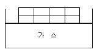
- 10.79 kJ
- 15.79 kJ
- 20.79 kJ
- 25.79 kJ
(정답률: 37%)
18. 이상기체의 열역학 과정을 일반적으로 Pnv( C는 상수 ) 로 표현할 때 n 에 따른 과정을 설명할 것으로 맞는 것은?
- n = 0 이면 등온과정
- n = 1 이면 정압과정
- n = 1.5 이면 등온과정
- n = ∞ 이면 정적과정
(정답률: 65%)
19. 다음과 같은 온도 범위에서 작동하는 카르노 ( Carnot ) 사이클 열기관이 있다. 이 중에서 효율이 가장 좋은 것은?
- 0℃와 100℃
- 100℃ 와 200℃
- 200℃ 와 300℃
- 300℃ 와 400℃
(정답률: 69%)
20. 압력 1N/cm2 , 체적 0.5m3 인 기체1 kg을 가역적으로 압축하여 압력이 2N/cm2 , 체적 0.3m3 로 변화되었다. 이 과정이 압력 체적 (P-V) 선도에서 직선적으로 나타났다면 필요한 일의 양은?
- 2000 N ．m
- 3000 N ．m
- 4000 N ．m
- 5000 N ．m
(정답률: 55%)
2과목: 냉동공학
21. 다음은 흡수식 냉동기의 Duhring 선도이다. 각 점의 설명이 옳지 않은 것은?
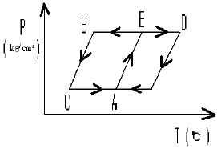
- A 점 흡수기
- C 점 - 증발기
- D 점 재생기
- B 점 열교환기
(정답률: 62%)
22. 다음 기술중 옳은 것은?
- 메틸렌 크로라이드, 프로필렌 글리콜, 염화칼슘 용랙은 유기질 브라인이다.
- 브라인은 잠열 및 현열 형태로 열을 운반한다.
- 프로필렌 글리콜은 부식성, 독성이 없어 냉동식품의 동결용으로 사용된다.
- 식염수의 공정점은 염화칼슘의 공정점 보다 낮다.
(정답률: 64%)
23. 응축기의 냉매가스의 열이 제거되는 방법은?
- 대류와 전도
- 증발과 복사
- 승화와 휘발
- 복사와 액화
(정답률: 70%)
24. 다음 응축기에 관한 설명 중 옳은 것은?
- 횡형 셀앤튜브식 응축기의 관내 수속은 5m/s 가 적당하다.
- 공냉식 응축기는 기온의 변동에 따라 응축능력이 변하지 않는다.
- 입형 셀앤튜브식 응축기는 운전중에 냉각관의 청소를 할 수 있는 장점이 있다.
- 주로 물의 감열로서 냉각하는 것이 증발식 응축기 이다.
(정답률: 80%)
25. 냉동장치 내 팽창밸브를 통과한 냉매의 상태로 옳은 것은?
- 엔탈피 감소 및 압력 강하
- 온도저하 및 엔탈피 감소
- 압력강하 및 온도저하
- 엔탈피 감소 및 비체적 감소
(정답률: 75%)
26. 다음 중 왕복동식 냉동기의 고압측 압력이 높아지는 원인에 해당 되는 것은?(오류 신고가 접수된 문제입니다. 반드시 정답과 해설을 확인하시기 바랍니다.)
- 냉각수량이 많거나 수온이 낮음
- 압축기 흡입밸브 누설
- 불응축가스 혼입
- 냉매량 부족
(정답률: 59%)
27. 암모니아 냉매를 사용하고 있는 과일 보관용 냉장창고에서 암모니아가 누설되었을 때 보관 물품의 손상을 방지하기 위한 해결책 중 옳지 않은 것은?
- SO2로 중화시킨다.
- CO2로 중화시킨다.
- 환기시킨다.
- 물로 씻는다.
(정답률: 77%)
28. 냉동장치에 관한 설명 중 맞는 것은?
- 증발식 응축기에서는 대기의 습구온도가 저하하면 고압 압력은 통상의 운전 압력보다 높게 된다.
- 압축기의 흡입압력이 낮게 되면 토출압력도 낮게 되어 냉동능력이 증대한다.
- 언로우더 부착 압축기를 사용하면 급격하게 부하가 증가하여도 액백 (liquid back ) 현상을 막을 수 있다.
- 액배관에 플래쉬 가스가 발생하면 냉매 순환량이 감소 되어 증발기의 냉동능력이 저하된다.
(정답률: 80%)
29. 압축기가 과열되는 원인 중 틀린 것은?
- 압축비 감소
- 윤활유 부족
- 냉매량 부족
- 냉각수 부족
(정답률: 65%)
30. 불응축가스가 냉동장치에 미치는 영향이 아닌 것은?
- 체적효율 상승
- 응축압력 상승
- 냉동능력 감소
- 소요동력 증대
(정답률: 70%)
31. 프레온 냉매 ( CFC ) 화합물은 태양의 무엇에 의해 분해되어 오존층 파괴의 원인이 되는가?
- 자외선
- 감마선
- 적외선
- 알파선
(정답률: 75%)
32. 사이클 중에 동작유체가 외부의 고열원으로 버리는 열량을 Q1, 외부의 저온열원으로부터 받는 열량을 Q2,외부에 대하여 한 일을 W라 할 때 히트 펌프 ( Heat pump) 의 성적계수는 어느 것인가?
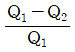
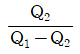
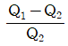
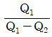
(정답률: 55%)
33. 운전중인 냉동장치의 저압측 진공게이지가50cmHg를 나타내고 있다. 이 때의 진공도는 약 얼마인가?
- 65.8%
- 40.8%
- 26.5%
- 3.4%
(정답률: 67%)
34. 냉동장치의 보수관리에 대한 설명중 옳지 못한 것은?
- 수냉 응축기를 청소하면 냉각수 출입구의 온도차가 작아지고, 고압측 압력도 내려간다.
- 증발기를 제상하면 압축기의 저압측 압력은 상승한다.
- 암모니아 냉동장치에 혼입된 공기는 가스 퍼지의 방출관을 수조에 넣어 방출시킨다.
- 암모니아 냉동장치의 유분리기에서 분리된 오일은 다시 사용하지 않고 폐유시킨다.
(정답률: 32%)
35. 가로 및 세로가 2m, 두께가 20cm, 열전도율 0.2kcal/mh℃ 인 벽체로부터의 열통과율은 50kcal/h 였다. 한쪽 벽면의 온도가30℃ 일 때 반대쪽 벽면의 온도는 몇 ℃인가? (단 , 반대쪽 벽면온도는 한쪽 벽면의 온도 30℃ 보다 높다.)
- 87.5 ℃
- 62.5℃
- 50℃
- 42.5℃
(정답률: 59%)
36. 냉동장치에서 냉매량이 부족할 때 일어나는 현상으로 옳은 것은?
- 흡입 압력과 토출 압력은 낮아지고 흡입 가스온도는 상승된다.
- 흡입 압력과 토출 압력은 낮아지고 체적효율이 증가한다.
- 흡입 압력과 응축 온도는 낮아지고 전동기의 전류는 많이 흐른다.
- 흡입 압력과 흡입 가스온도는 낮아지고 냉동능력은 증가한다.
(정답률: 67%)
37. 왕복동식 압축기의 체적효율이 감소하는 이유는?
- 단열 압축지수의 감소
- 압축비의 감소
- 극간비의 감소
- 흡입 및 토출밸브에서의 압력손실의 감소
(정답률: 48%)
38. 고속다기통 압축기의 단점이 아닌 것은?
- 실린더 수가 많아 진동이 크다.
- 윤활 소비량이 비교적 많다.
- 윤활유가 열화 되기 쉽다.
- 간극이 큰 편이라 체적효율이 나쁘다.
(정답률: 35%)
39. 증발식 응축기의 보급수량이 결정요인과 관계가 없는 것은?
- 냉각수 상.하부의 온도차
- 냉각할 때 소비한 증발수량
- 탱크내의 불순물의 농도를 증가시키지 않기 위한 보급수량
- 냉각공기와 함께 외부로 비산되는 소비수량
(정답률: 48%)
40. 어떤 R-22 냉동장치에서 냉매 1kg이 팽창변을 통과하여 5℃의 포화증기로 될 때까지 약 40 kcal의 열을 흡수하였다. 같은 조건에서 냉동능력이 25000kcal/h 이라면 증발 냉매량은 얼마이겠는가?
- 387 kcal/h
- 450 kcal/h
- 525 kcal/h
- 625 kcal/h
(정답률: 47%)
3과목: 공기조화
41. 증기난방배관에서 증기트랩을 사용하는 이유로서 적당한 것은?
- 관내의 공기를 배출하기 위하여
- 배관의 신축을 흡수하기 위하여
- 관내의 압력을 조절하기 위하여
- 관내의 증기와 응축수를 분리하기 위하여
(정답률: 89%)
42. 습공기의 성질을 나타낸 공기선도에서 다음 열거중 나타나지 않은 상태는? (단, 온도 : t , 압력 : p , 절대습도 : x , 엔탈피 : h )
- t 와 x 의 관계
- h 와 x 의 관계
- t 와 h 의 관계
- P 와 h 의 관계
(정답률: 94%)
43. 일사를 받는 외벽으로부터의 침입열량을 구하는 식은 다음 중 어느 것인가? (단, k : 열통과율 A : 면적 △t : 상당외기 온도차 )
- q = k A△t
- q = 0.86 A/△t
- q = 0.24 A△t/ k
- q = 0.29 k /A△t
(정답률: 95%)
44. 단면적 10m2, 두께 2.5cm의 단열벽을 통하여 3kw의 열량이 내부로부터 외부로 전도된다. 만약 내부 표면온도가 415℃이고 재료의 열전도율이 0.2W/mk 라면 외부표면 온도는 약몇 도인가?
- 185℃
- 218℃
- 293℃
- 378℃
(정답률: 67%)
45. 덕트의 보온목적으로 적합치 않은 것은?
- 결로방지를 위하여
- 급기덕트의 열손실을 방지하기 위하여
- 천장수납을 용이하게 하기 위하여
- 소음을 줄이기 위하여
(정답률: 88%)
46. 각층 유닛 방식의 특징이 아닌 것은?
- 송풍덕트가 짧게 되고, 주 덕트의 수평덕트는 각 층의 복도 부분에 한정되므로 수용이 용이하다.
- 설비비가 저렴하다.
- 사무실과 병원 등의 각 층에 대하여 시간차 운전이 적합하다.
- 설계에 따라서는 각 층 슬라브의 관통 덕트가 없게 되므로 방재상 유리하다.
(정답률: 95%)
47. 스케일의 부착을 방지하는 방법으로서 맞지 않는 것은?
- 슬러지는 적절한 분출로 제거한다.
- 급수중의 가스체를 발산시킨다.
- 수질관리를 철저히 한다.
- 적절한 청정제를 쓴다.
(정답률: 82%)
48. 건구온도15℃의 습공기 300m3/h를 20℃까지 가열하는데 필요한 열량은 약 몇 kcal/h 인가?
- 265 kcal/h
- 325 kcal/h
- 435kcal/h
- 510kcal/h
(정답률: 67%)
49. 다음 공조방식 중에서 전공기 방식에 속하지 않는 것은?
- 단일덕트방식
- 이중덕트방식
- 인덕션 유닛 방식
- 각층 유닛 방식
(정답률: 75%)
50. 다음의 냉수코일설계 기준을 설명한 것 중 옳지 않은 것은?
- 코일의 설치는 관이 수평으로 놓이게 한다.
- 수속의 기준 설계 값은 1m/s 전후이다.
- 공기 냉각용 코일의 열 수는 4~8열이 많이 사용된다.
- 냉수 입출구 온도차는 10℃이상으로 한다.
(정답률: 64%)
51. 원형턱트에서 사각덕트로 환산시키는 식이 맞는 것은?(단, a는 사각덕트의 장변길이, b는 단변길이, d는 원형 덕트의 직경 또는 상당직경이다.)
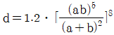
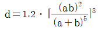
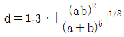
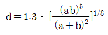
(정답률: 85%)
52. 다음 원심송풍기의 풍향제어 방법 중 소요동력이 가장 최소인 방법은?
- 흡입구 베인 제어
- 스크롤 댐퍼제어
- 토출측 댐퍼 제어
- 회전수 제어
(정답률: 79%)
53. 상당 외기 온도차에 관한 설명으로 맞는 것은?
- 상당 외기 온도차 = 외기온도 실내온도
- 상당 외기 온도차 = 상당외기온도 실내온도
- 상당 외기 온도차 = 외기온도 상당실내온도
- 상당 외기 온도차 = 상당외기온도 상당실내온도
(정답률: 50%)
54. 온수의 물을 에어워셔 내에서 분무시킬 때 공기의 상태변화는?
- 습구온도 강하
- 건구온도 상승
- 건구온도 강하
- 습구온도 상승
(정답률: 55%)
55. 외기 온도가 -5℃이고, 실내 공급공기온도를 18℃로 유지하는 히트 펌프(heat pump)가 있다. 실내 총열손실 열량이 50,000kcal/h 일 때 외기로부터 침입되는 열량은 약 몇 kcal/h인가?(오류 신고가 접수된 문제입니다. 반드시 정답과 해설을 확인하시기 바랍니다.)
- 43255 kcal/h
- 43500 kcal/h
- 46047 kcal/h
- 50000 kcal/h
(정답률: 36%)
56. 후굴(익)형 송풍기의 특징이 아닌 것은?
- 동일용량에 대하여 회전수가 상당히 적다.
- 효율이 높다.
- 정숙한 운전을 할수 있다.
- 고압 뿐만 아니라, 비교적 압력이 낮은 범위에도 사용되고 있다.
(정답률: 29%)
57. 증기난방의 설명 중 옳지 못한 것은?
- 열의 운반 능력이 크다.
- 예열시간이 온수난방에 비해서 짧다.
- 실내 방열량 조절이 쉽다.
- 스팀 해머링( Steam Hammering )으로 인한 소음을 일으키기 쉽다.
(정답률: 58%)
58. 덕트의 마찰저항을 증가시키는 요인은 다음과 같이 여러가지가 있다. 이들 중 값이 커지면 마찰저항이 감소되는 것은?
- 덕트재료의 마찰 저항계수
- 덕트 길이
- 덕트 직경
- 풍속
(정답률: 95%)
59. 다층벽이 외부는 10cm의 벽돌, 다음은 15cm의 콘크리트, 내부는 1.2츠의 플라스터로 마무리를 하였다. 외기온도 5℃ , 풍속은 7m/s이고 실내는 20℃라 한다. 벽의 열 관류율은 약 얼마인가? ( 단, 벽돌 λ= 0.47kcal/mh℃ 콘크리이트 λ = 1.3kcal/mh℃ 플라스터 λ = 0.44kcal/mh℃ 외부의 격막계수 α0 = 29.3kcal/m2h℃ 내부의 격막계수 α0 = 7.14kcal/m2h℃ )
- k = 33.21 kcal/m2h℃
- k = 195 kcal/m2h℃
- k = 1.89 kcal/m2h℃
- k = 0.53 kcal/m2h℃
(정답률: 53%)
60. 다음 설명 중 옳은 것은?(오류 신고가 접수된 문제입니다. 반드시 정답과 해설을 확인하시기 바랍니다.)
- 각층 유니트 방식은 중간규모 이상이거나 대규모 건물의 방식에 적합하다.
- 이중 덕트방식은 에너지 절약적인 방식이다.
- 팬코일 유니트 방식은 전공기식에 비해 덕트 면적이 크다.
- 멀티존 유니트 방식에는 혼합상자를 사용한다.
(정답률: 50%)
4과목: 전기제어공학
61. 그림의 신호흐름선도에서 X2/ X1를 구하면?
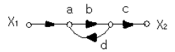
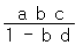
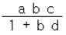
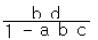
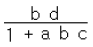
(정답률: 58%)
62. 그림과 같은 연산증폭기를 사용한 회로의 기능은?
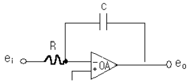
- 적분기
- 미분기
- 가산기
- 제한기
(정답률: 60%)
63. 전류 I = 2000(3t+4t2) [A] 를 3초 동안 어떤 도선에 흘려 보낸다면 전체 전기량은 몇 Ah 인가?
- 27.5
- 32.5
- 35.5
- 41.5
(정답률: 44%)
64. 서보 전동기가 일반전동기와 다른 점에 대한 설명으로 옳은 것은?
- 속응성이 낮다.
- 기동, 정지 및 역전의 동작을 자주 반복한다.
- 발열이 적으므로 강제 냉각방식이 필요 없다.
- 회전 방향에 따른 특성의 차가 커야 한다.
(정답률: 34%)
65. 대부분의 시간 지연은 시스템의 무엇 때문에 발생하는가?
- 전파 지연
- 정밀도
- 전달함수
- 오버슈트
(정답률: 32%)
66. 역률이 80%이고, 무효전력이 300Var 인 부하를 4시간 사용할 때의 소비전력량은 몇 kWh 인가?
- 1.2
- 1.6
- 1.8
- 2.0
(정답률: 43%)
67. 자동체어계의 디지털제어에 적합한 전동기는?
- 유도전동기
- 직류전동기
- 스탭전동기
- 동기전동기
(정답률: 41%)
68. 도체에 전하를 주었을 경우에 틀린 것은?
- 전하는 도체 외측의 표면에만 분포한다.
- 전하는 도체 내부에만 존재한다.
- 도체 표면의 곡률 반경이 작은 곳에 전하가 많이 모인다.
- 전기력선은 정(+) 전하에서 시작하여 부전하 (-) 에서 끝난다.
(정답률: 70%)
69. 자동제어 계통의 조작순서로 옳은 것은?
- 검출단 → 조작량 → 조작부
- 조절량 → 조절부 → 조작단
- 조절부 → 검출부 → 조작부
- 검출부 → 조절부 → 조작부
(정답률: 39%)
70. 자동화의 네번째 단계로서 전 공장의 자동화를 컴퓨터 통합 생산 시스템으로 구성하는 것은?
- FMC ( Factory Manufacturing Cell )
- FMS ( Factory Manufacturing System )
- CIM ( Computer Intergrated Manufacturing )
- MIS ( Management Information System )
(정답률: 64%)
71. 조작량 ( manipulated variable )은 제어요소가 무엇에 주는 양을 말하는가?
- 기준입력
- 제어대상
- 궤환요소
- 제어편차
(정답률: 60%)
72. 반지름 3Cm , 권수 2회인 원형코일에 1A의 전류가 흐를 때 원형 코일 중심에서 축상 4Cm인 점의 자계의 세기는 몇 AT/m 인가?
- 1.8
- 3.6
- 7.2
- 14.4
(정답률: 24%)
73. 제어량이 온도, 압력 , 유량 및 액면 등과 같은 일반 공업량으로서 플랜트나 생산 공정 중의 상태량을 제어량으로 하는 제어는?
- 프로그램 제어
- 프로세스 제어
- 스퀸스 제어
- 추종제어
(정답률: 56%)
74. 그림과 같은 유접점 논리 회로를 간단히 하면?
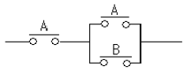
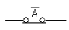
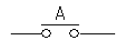
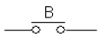
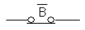
(정답률: 66%)
75. 시퀜스 제어에 관한 설명 중 틀린 것은?
- 조합논리회로도 사용된다.
- 시간 지연요소도 사용된다.
- 유접점 계전기만 사용된다.
- 제어결과에 따라 조작이 자동적으로 이행된다.
(정답률: 59%)
76. 직류 전동기에 관한 사항으로 틀린 것은? ( 단, N 은 회전속도, Φ 는 자속, Ia 는 전기자 전류, Ra 는 전기자 저항 , R 은 전동기 저항 , ω 는 회전 각, k 는 상수이다. )
- 역기전력 : E=KㆍøㆍN[V]
- 회전속도 :
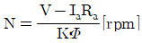
- 토크 :
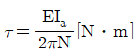
- 기계적 출력 : P=9.8ωR2[w]
(정답률: 42%)
77. 다음 중 파고율이 가장 큰 파형은?
- 삼각파
- 정현파
- 반원파
- 구형파
(정답률: 67%)
78. 예비전원으로 사용되는 축전지의 내부저항을 측정하려고 한다. 가장 적당하게 사용할 수 있는 브리지는?
- 휘이트스토운 브리지
- 캠벨 브리지
- 코올라우시 브리지
- 맥스웰 브리지
(정답률: 57%)
79. 근궤적은 G (S) H (S) 의 어느 점에서 출발하여 어느점으로 종착하는가?
- 극적 출발, 영점 종착
- 분기점 출발, 극점 종착
- 영점출발, 분기점 종착
- 영점 출발, 임계점 종착
(정답률: 58%)
80. 유도전동기에서 슬립이 " 0 " 이라고 하는 것은?
- 유도전동기가 제동기의 역할을 한다는 것이다.
- 유도전동기가 정지상태인 것을 나타낸다.
- 유도전동기가 전부하 상태인 것을 나타낸다.
- 유도전동기가 동기속도로 회전한다는 것이다.
(정답률: 70%)
5과목: 배관일반
81. 냉동 장치의 냉매배관은 최소한 다음 조건을 만족 시켜야 한다. 틀린 것은?
- 사용하는 배관 재료와 관 두께는 냉매의 종류, 사용온도 및 압력에 적합한 것을 사용한다.
- 압축기와 응축기가 동일선상에 있는 경우의 수평관은 1/50의 올림 구배로 한다.
- 압축기의 시동, 정지, 운전 중에 액 냉매가 압축기 에 흡입 되지 않도록 한다.
- 배관의 진동을 방지하고 적당한 간격으로 적합한 지지 용 받침대를 설치한다.
(정답률: 60%)
82. 다음은 역지밸브(check valve )에 대한 기술이다. 잘못된 것은?
- 관내유체의 흐름을 일정한 방향으로 유지하기 위하여 사용한다.
- 스윙형, 리프트형 , 풋형 등이 있다.
- 구조에 따라 수평관, 수직관에 사용할 수 있다.
- 필요할 때 수동으로 개폐하여야 한다.
(정답률: 58%)
83.
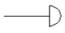
은 어떤 관의 말단부 표시인가?- 티
- 소켓
- 플러그
- 캡
(정답률: 56%)
84. 하아트 포드 ( Hart ford ) 배관법과 관계 없는 것은?
- 보일러 내의 안전 저수면 보다 높은 위치에 환수관을 접속한다.
- 저압증기 난방에서 보일러 주변의 배관에 사용한다.
- 보일러 내의 수면이 안전수위 이하로 내려가기 쉽다.
- 환수주관에 침적된 찌꺼기를 보일러에 유입시키지 않는다.
(정답률: 67%)
85. 압력탱크 급수방식에서 압력탱크의 필요 최저 압력을 구하는 요소가 아닌 것은?
- 급수 펌프의 수압
- 수전의 필요 압력
- 배관 내에서의 마찰손실압력
- 압력 탱크에서 최고층 수전까지에 해당하는 수압
(정답률: 0%)
86. 다음의 냉. 난방 배관에 대한 설명 중 옳지 않은 것은?
- 증기관이나 응축수 배관에 설치하는 글로브 밸브는 일반적으로 밸브 축이 수직으로 되게 설치한다.
- 팽창관에는 밸브를 설치해서는 안된다.
- 지름이 다른 관을 나사 이음할 때는 부싱을 사용하지 않는 것이 바람직하다.
- 공조기기의 물빼기용 배수는 간접배수로 한다.
(정답률: 40%)
87. 최고 사용압력 P = 65 kg/cm2 의 배관에 SPPS 40 을 사용하는 경우 SCH.NO는 ? (단, 안전율은 4 이다.)
- 45
- 60
- 65
- 70
(정답률: 50%)
88. 펌프주위의 배관시공에 관한 사항이다. 잘못된 것은?
- 푸트 밸브 ( foot valve ) 등 모든 관의 이음은 수밀, 기밀을 유지할 수 있도록 한다.
- 흡입 양정은 짧게 하고, 굴곡 배관을 되도록 피한다.
- 흡입관은 펌프를 향하여 하향 구배로 한다.
- 양정이 높을 경우에는 펌프 토출구와 게이트 밸브와의 사이에 체크밸브를 설치한다.
(정답률: 57%)
89. 다음 중 사용 압력이 가장 높은 동관은?
- L관
- M관
- K관
- N관
(정답률: 50%)
90. 방열기 주위 배관 설명으로 옳지 않은 것은?
- 방열기 주위는 스위블이음으로 배관한다.
- 공급관은 앞쪽올림의 역구배로 한다.
- 환수관은 앞쪽내림의 순구배로 한다.
- 구배를 취할 수 없거나 수평주관이 2.5m 이상일 때는 한 치수 작은 지름으로 한다.
(정답률: 77%)
91. 다음 중 동관용 공구가 아닌 것은?
- 익스팬더
- 사이징 툴
- 드레서
- 플레어링 툴 세트
(정답률: 32%)
92. 배관에서 지름이 다른 관을 연결하는 데 사용하는 것은?
- 엘보
- 티이
- 레듀셔
- 플랜지
(정답률: 53%)
93. 급탕설비에 관한 설명 중 틀린 것은?
- 저탕탱크의 설계에 있어서 가열 능력을 크게 취하면 저탕량을 적게 할 수 있다.
- 팽창관의 개구 높이는 급수 탱크에서 펌프의 양정 만큼 반드시 높게 하지 않으면 안된다.
- 급탕배관은 배관 방식과 공급방식에 의하여 분류된다.
- 간접 가열식은 저탕조 내부에 스케일이 잘 생기지 않는다.
(정답률: 16%)
94. 다음 중에서 밸브의 역할이 아닌 것은?
- 유체의 밀도 조절
- 유체의 방향 전환
- 유체의 유량 조절
- 유체의 흐름 단속
(정답률: 74%)
95. 펌프의 양수량이 60m3/min 이고, 전양정 20m 일 때 볼류트로 구동할 경우 필요한 동력은 약 몇 kw 인가? (단, 펌프의 효율은 60% 로 한다. )
- 196.1 [kw]
- 200 [kw]
- 326.8 [kw]
- 4⑤.8[kw]
(정답률: 53%)
96. 폴리에틸렌관의 이음방법으로 옳지 않은 것은?
- 융착이음
- 나사이음
- 테이퍼이음
- 플라스턴이음
(정답률: 27%)
97. 온도 조절식 트랩에 속하지 않는 것은?
- 벨로즈식 트랩
- 다이어프램식 트랩
- 바이메탈식 트랩
- 디스크식 트랩
(정답률: 78%)
98. 다음 중 냉각수 배관에 관한 설명이 옳은 것은?
- 냉각수 펌프의 흡입관은 가능한 한 저항이 적도록 배관하고 흡입 실양정을 9m 이상 높게 잡는다.
- 냉각수 배관은 모두 냉각탑의 수면 이하가 되도록 배관 한다.
- 냉각탑의 배수관 및 오버플로관은 배수관에 직접 연결한다.
- 기기에 접속하는 배관은 진동이 잘 전달 되도록 용접이음으로 한다.
(정답률: 6%)
99. 역지밸브 (check valve )의 도시기호는?
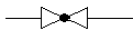
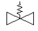
(정답률: 70%)
100. 경질 염화비닐관의 특성이 아닌 것은?
- 열 팽창율이 크다.
- 관내 마찰손실이 적다.
- 산, 알칼리 등의 부식성 약품에 대한 내식성이 적다.
- 고온 또는 저온의 장소에 부적당하다.
(정답률: 53%)
냉각량은 제습기에서의 엔탈피 감소량과 증발기에서의 엔탈피 상승량의 합과 같습니다. 따라서, 냉각량은 (h4 - h3) + (h1 - h2) = (32.69 - 74.53) + (178.16 - 210.38) = 103.63 kJ/kg 입니다.
따라서, 정답은 "32.22 kJ/kg , 103.63 kJ/kg" 입니다.